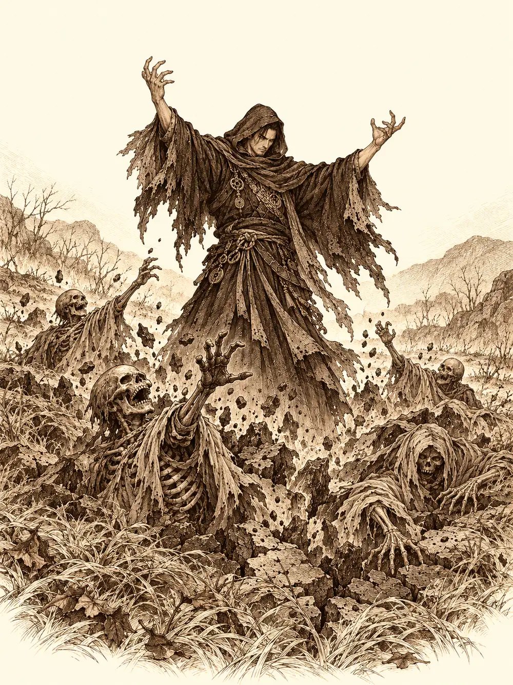

Capítulo 149
Muertos en el bosque
Libro IX · Mareas y muertos
Dormían los cuatro en la misma cama, que era demasiado pequeña para cuatro: Shizuka, que roncaba con la boca abierta; su hermano, enroscado en una esquina; Arwen, cubierta de la tierra de siempre, con alguna pulga saltándole del pelo; y Channi, que no era exactamente una niña sino una criatura de pico y plumas que parecían hojas. La base de los cazadores se había vuelto una selva por culpa de Channi y de sus semillas, así que desde hacía unos días ella y Arwen andaban por el palacio como por su casa, destrozando habitaciones, jugando con los criados y colándose de vez en cuando en la cama de Calista y Gelbreak a pedir un cuento. En el palacio ya nadie intentaba detenerlas.
Esa noche algo las despertó. El viento y la tierra estaban incómodos, inquietos como animales antes de una tormenta, y ellas lo sintieron en la piel antes de entenderlo. Arwen se incorporó de golpe y le dio con el pie en la cara a Channi.
"Channi, ¿lo has sentido tú también?".
"Sí. Pío. Qué raro".
Intentó despertar a Shizuka poniéndole el pie en la mejilla, y Shizuka se lo chupó, se dio la vuelta y siguió roncando. Arwen saltó de la cama.
"Oye, ¿quieres que hagamos una sorpresita en el palacio, ahora que están todos dormidos?".
Arwen se convirtió en una araña y Channi en una mosca. Por las escaleras bajaba Mei, que empezaba a trabajar antes que nadie, con la cabeza gacha. Vio la araña en el escalón. La araña le subió por el tobillo. Mei gritó, sacudió la pierna, gritó otra vez, y la mosca le dio vueltas alrededor de la cabeza hasta que los guardias acudieron y las dos pequeñas ya se habían ido escaleras arriba.
En la puerta del cuarto de la shogun había dos guardias tritones. Vieron la araña y, más que desenvainar, intentaron pisarla; Arwen se coló por debajo de la puerta y los guardias, entre risas, dijeron algo en su lengua de burbujas y volvieron a su sitio.
Dentro, Arwen trepó por la sábana hasta la cara de Gelbreak y le paseó las patitas por la mejilla. El drow no se despertó. Probó con Calista. Calista sí se despertó, y al ver una araña a un palmo de los ojos soltó un grito que despertó a Gelbreak de golpe.
"¡Hay una araña!".
Gelbreak, todavía medio dormido, sacudió la sábana. La araña salió volando y aterrizó en el suelo. Él estaba a punto de volver a cerrar los ojos, pero la araña seguía allí. Levantó la mano y de sus dedos salió un rayo verde de los que deshacen a la gente en polvo.
La araña desapareció y en su lugar quedó Arwen, sentada en el suelo, herida, viva, con la cara descompuesta. Y se echó a llorar.
Cuando Arwen lloraba, la tierra lloraba con ella. Todo el palacio empezó a temblar. En la capital se cayeron tejas y macetas, y en su gimnasio, al otro lado de la ciudad, a Jin se le vinieron encima las pesas. Calista saltó de la cama para atender a la niña.
"Arwen, ¿cuántas veces te he dicho que no entres así? ¿Cómo se te ocurre entrar convertida en araña?".
"Pero quiero un abrazo".
Calista miró a Gelbreak. Gelbreak miró al techo, suspiró y se agachó. La niña le saltó encima, le rodeó el cuello, le llenó los hombros de tierra y de alguna pulga, y se quedó así hasta que se le pasó el hipo. Al soltarlo, un mechón de pelo del drow se le quedó entre los dedos.
Channi, que había vuelto a su forma de siempre, miraba a Gelbreak con las hojas de la cabeza erizadas y un odio de pájaro pequeño. Él preguntó qué era aquel pollo. Ella le dio un picotazo en el pie. Gelbreak levantó la mano, que empezó a iluminarse de morado, y Calista se la bajó con la suya.
"Venga, niñas, fuera. Si os portáis bien, mañana tendréis una sorpresa en el desayuno".
"Tenemos que ir a ver eso que hay en el bosque", dijo Arwen.
"Pues id. Y luego desayuno".
Más tarde, Gelbreak descubrió que el pelo se le caía a puñados. Se quedó casi calvo. Echó la culpa a las niñas y juró que se lo cobraría, y Calista le prohibió tocarles un pelo, que era justo lo que a él ya no le quedaba.
Salieron corriendo del palacio a cuatro patas, como dos perros, y los soldados del shogunato se apartaron porque ya las conocían. Los tritones se quedaron mirándolas con desconfianza, como quien ve pasar dos bichos raros de tierra firme.
En la tienda de Tsugami, Arwen distrajo a la modista con preguntas mientras Channi le robaba treinta y siete monedas y una poción para respirar bajo el agua. Tsugami no se dio cuenta. Limpió un poco a Arwen, que lo necesitaba, y les regaló un vestido a cada una, uno para sobrevivir en el monte y otro para ayudar a los demás. Les explicó con mucha paciencia para qué servía el dinero, que se trabaja para ganarlo y se da a cambio de cosas. Luego les dio croquetas.
Jin las encontró después en una taberna, cuando Arwen intentaba marcharse sin pagar. Pagó él. Para entonces la sensación de la noche había crecido y se había vuelto clara: en algún sitio la naturaleza se estaba muriendo. Arwen y Channi cerraron los ojos y la siguieron con el pensamiento hasta un lugar que conocían, Jigoku no Mori, el bosque que había junto a Ukio. Channi había aparecido en Kuroto precisamente por allí.
Cruzaron el portal de los cazadores. En Ukio se distrajeron con los comercios y con los vecinos, y en la taberna Jin les propuso a los ayudantes del pueblo, a Lealín, a Zogia y a un elfo, entrenarse con él y ayudar en la guerra a cambio de una paga.
"No es algo permanente. Solo mientras dure la guerra".
Lo pensarían, dijeron, si alguien se quedaba vigilando el pueblo en su lugar. Zogia se encogió en la silla. Desde el ataque del gigante tenía miedo, y Arwen le dio un caramelo y se quedó a su lado hasta que dejó de temblar.
Antes de salir hacia el bosque, Jin sacó a Ignacio, su búho azul, para que les sirviera de guía. El búho salió protestando. Hacía siglos que no lo sacaba, no le daba de comer, no lo cuidaba. Channi se lo tradujo a todos, palabra por palabra, mientras el búho rechazaba con desprecio el alpiste que le ofrecían. Al final aceptó un trozo de carne y se posó cerca de Channi, que era la única que lo entendía. No era Fernando, el cuervo que Jin había sacrificado tiempo atrás; era otro compañero, con su propio carácter y sus propias quejas.
Arwen silbó a su cuervo y por la boca del pájaro salió Chilia, la monje, que la subió a hombros y echó a andar hacia el bosque. Arwen le tocó la frente a Jin con una mano que brillaba como el oro y le dejó en el cuerpo una certeza tranquila, la de saber lo que venía antes de que viniera. Chilia le dio a Jin unos ojos capaces de ver lejos en la oscuridad y le rozó la cabeza a Channi para que despertara antes que nadie si algo se movía.
Jigoku no Mori estaba envuelto en niebla. Se oía el bosque. No con los oídos, sino con algo que estaba más adentro, y lo que se oía era un gemido largo, sordo, como el de un animal herido que ya no tiene fuerzas para gritar.
Chilia se detuvo con un pie en el aire.
"Hay alguien ahí al fondo".
Era una figura con túnica, humana o casi, que caminaba muy despacio. Por donde pasaba, todo lo verde se moría. La hierba se volvía gris y se doblaba, las hojas se arrugaban como papel quemado, los troncos se agrietaban. Dejaba detrás de sí un rastro de muerte tan limpio como el surco de un arado.
"Eso es lo malo que está pasando en el bosque", dijo Arwen. "¿Qué es eso de hacer gritar al bosque? Hay que pegarle".

La figura se volvió hacia ellos y levantó las manos. A su alrededor, la tierra se abrió y de ella salieron esqueletos y cadáveres con la carne colgando.
Jin desenvainó y fue a por los muertos. Channi llamó a dos lobos. Arwen clavó en el suelo un tótem con forma de unicornio que derramaba luz sobre los suyos y llamó a un ser del país de las hadas con forma de ganso, armado, para que la protegiera. El nigromante respondió con unos círculos de muerte que barrieron el claro. Los lobos se deshicieron. El ganso cayó antes de haber podido dar un solo picotazo. Y una de esas magias verdes que deshacen la carne alcanzó a Jin en el pecho; el guerrero se tambaleó, se quedó sin la velocidad que lo sostenía y siguió en pie de puro empeño.
Arwen lo curaba con el tótem y con su espíritu, sin parar. Channi se curaba sus propias heridas y Chilia peleaba entre los no muertos, con unos golpes que llevaban dentro algo frío y definitivo.
Entonces Channi levantó la vista al cielo y lo llamó. El cielo le hizo caso. Se cerró sobre el claro una tormenta que barrió a los no muertos y que, de paso, alcanzó a sus amigos, porque una tormenta no distingue a quién quiere uno y a quién no. El nigromante extendió una nube venenosa que lo ocultaba todo. Arwen intentó deshacerla y no pudo; Chilia la sacó de dentro a rastras. Channi intentó curar a alguien y el nigromante le cortó la magia en el aire. Luego el enemigo cambió la nube por un muro de fuego, y la nube desapareció, pero el olor a plumas quemadas se quedó.
"Huele a pollo a la brasa", dijo alguien.
"Matadlo ya, por favor", dijo Channi.
Arwen, cansada y furiosa, se plantó en un sitio desde el que lo veía bien y lanzó un rayo. El rayo alcanzó al nigromante y también a Chilia, que se quedó ciega gritando que no veía, que no veía nada. Y el nigromante cayó al suelo, muerto.
A Chilia se le pasó la ceguera enseguida. Arwen repartió curas a todos con las manos encendidas de oro, una tras otra, aunque le quedaban pocas fuerzas. Jin se arrodilló junto al cadáver y le apartó la túnica. Debajo no llevaba nada. Tenía todo el cuerpo cubierto de signos, palabras o algo parecido a palabras, escritas sobre la piel con heridas, como si alguien lo hubiera usado de pergamino con un cuchillo.
"Me lo llevo. Que lo estudie alguien con más experiencia que yo".
"¿Qué es ese tipo?", preguntó Arwen.
"Parece un nigromante. Alguien que usa fuerzas impías para levantar muertos".
"¿Y qué hace uno por aquí suelto?".
"Eso es lo que no sabemos".
Al salir vieron lo que el nigromante había dejado detrás: un camino de árboles muertos, sin una brizna de hierba, tierra gris y maltratada que se perdía entre la niebla. Arwen se quedó mirándolo. Quería volver a ayudarlo. Lo dijo en voz alta, que volvería, y se le cerraban los ojos mientras lo decía. Chilia le tocó la frente, la durmió y se la llevó agarrada de una pierna, cabeza abajo, haciendo como que era una bandera y gritando a Jin que no la pillaría. Jin no la persiguió. Llevaba un cadáver al hombro.
Channi miró el corredor muerto una última vez, con las hojas caídas, y luego bajó la cabeza y siguió a los demás hacia Ukio.
Esa noche, de vuelta en Sho, Channi siguió una sombra que se movía junto a una puerta y encontró a un joven pálido, de dientes afilados, leyendo un libro. Al principio se asustó. Él le dijo que era amigo de Arwen y que se llamaba Kurobane, y la sentó en su regazo. Ella le contó, a trozos, que un hombre malo hacía daño a las plantas y traía huesos y muertos, que lo habían vencido entre ella, Arwen, Jin y una amiga que mataba con solo tocar, y que las plantas no habían sobrevivido. Kurobane le prometió que, cuando todo terminara, replantarían los bosques. Channi le dijo que se parecía a alguien que conocía en sueños, al que llamaba Espejo Negro, y que venía de un lugar muy lejano que en su lengua se llamaba lugar del pan de maíz, adonde unos seres sabios la habían llevado sin explicarle por qué. Después le cantó una nana sobre un bebé y las estrellas y se quedó dormida. Kurobane la acostó en la almohada.
En el camino al campamento, Banzo le habló a Gelbreak de unos ojos que se volvían rendija y de una marca de araña muerta, y le dijo que sospechaba que todo aquello estaba unido a las esferas y a algún plan contra Calista. Gelbreak le sugirió que quizá estaba agotado, aunque él mismo no parecía tranquilo. Hablaron del Nox. Gelbreak recordaba que, según Calista, los emblemas de las cajas eran de mercaderes de Puerto de las Espadas, y sospechaba que los mejores ingredientes para una droga así venían del Feywild. Quería consultarlo con Kazuki.
Kazuki acudió al palacio. Gelbreak le dio un vial con un polvo y le explicó que los cultistas lo fabricaban en masa y que necesitaba saber qué llevaba para combatir sus efectos. Kazuki se lo guardó y prometió resultados cuanto antes. Cuando Islil preguntó por los susurros, Gelbreak la distrajo con una insinuación sobre su vida íntima que a Calista no le hizo ninguna gracia. Lo mandó a ver qué hacían las niñas.
Al abrir el cuarto, tuvo que agacharse: un rayo de fuego lanzado por Shizuka le pasó por encima de la cabeza y agujereó la pared de la biblioteca. Arwen aplaudió. Gelbreak prohibió hacer magia dentro del palacio, y Arwen le tiró de la ropa y le pidió que les enseñara un hechizo interesante. Él se negó una vez, y otra, y otra, sobre todo a enseñarles nada que destruyera cosas. Al final, harto, cedió con una condición: que Calista no se enterara.
Arwen, por su parte, estaba descubriendo el dinero. Tsugami, después de limpiarla y de regañar a Serafina por no haberle enseñado nada a la niña sobre las cosas de cada día, mandó a Arwen con su mochila de plantas y plumas al alquimista Kashai, que reconoció en ella ingredientes raros y le ofreció un trato: si le traía más, le pagaría. Arwen le aplicó en la cara una pasta dorada de hierbas mascadas para quitarle un grano, y Kashai se hinchó como un sapo, pero le dio una bolsa de oro de todos modos. Luego la niña abrió un portal y de él salió una criatura verdosa con sombrero de seta, que se llamaba O Fortune y la escuchó durante una hora larga en la taberna de Ushi mientras ella enumeraba todo lo que sabía hacer. Le prometió pensar en algún trabajo que le sirviera.
Serafina, en la tienda de Tsugami, eligió unas prendas para llevar debajo del vestido azul. La invitación de Alister era para un baile de máscaras en la zona alta. Admitió ante la modista que lo suyo con Guxi se tambaleaba y que había otros dos interesados.
Kurobane, aquella misma semana, bajó a la cofradía de Cuchillas Negras de parte de Calista. Strug no lo dejó pasar hasta cobrarle dos monedas de oro. Abajo, Tiari lo reconoció como el ninja que había tenido que ver con Danifae y le preguntó por qué vigilaba la antigua casa de Calista y Gelbreak. Kurobane le contó que Danifae lo había mandado allí cuando él sentía algo por la tritón, y que el secretismo de aquella pareja le daba que pensar. Tiari sacó toda esa información gratis. Luego le hizo un encargo: que la informara de los negocios, los tratos, las tropas y todos los movimientos del shogunato, incluidos los de Calista y Gelbreak. Le advirtió que aquello iba contra las normas de los cazadores y que, si la shogun lo descubría, sabría de dónde venía la filtración. Kurobane se guardó el collar de cazador. Tiari le dio un anillo negro que, según ella, le diría en todo momento dónde estaba él, y Kurobane se lo puso bajo el guante y salió.
Cuando se fue, Tiari le dijo a uno de los suyos que un corazón roto por los celos siempre podía ser útil.